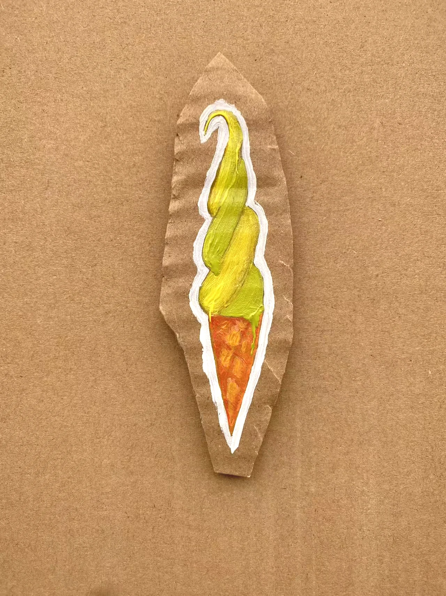

The Second Glance
He doesn’t like the weather in Canton. It’s already November, back where he’s from, the chill in the air is already quite prominent. But here, the hideous sultriness never really goes away. A devastating typhoon has just swept through the Philippines, shutting down the campus for a day or two. Students run into the convenience store and clear out everything in sight in just a day. But just when everyone thinks it will make landfall here, it turns around. After a few fitful days of rain, the snails come out. Some are on the walls, still attached; some are on the ground. But many of them are already nothing more than debris, crushed by either bikes or oblivious pedestrians.
They are taking an exam together at seven. He waits outside the classroom for her to show up. It’s seven already; he texts her, but there’s no response. He runs downstairs to search for her, but there’s not a single person in the building at this time. The exam started five minutes ago—quite a demanding one—and there are no new messages, so he goes up to the classroom. When he’s certain that she is lost, she walks into the classroom with a bottle in her hand. She doesn’t seem to be worried about the time or the test. She’s sitting two seats away from him in the front row. They exchange a glance; not knowing what to do, he simply smiles at her. She looks so pretty.
Half the time passes. Suddenly, she drops her pen onto the table and stares at her paper for a moment before packing up her items. She walks out of the classroom while most of the students are still working. He still has three questions left, and he catches sight of her leaving.
“These stupid questions and pretentious teachers. I’d bet they couldn't even figure out the answers themselves if I showed this to them for the first time,” he murmurs. He hates this school most of the time. With all the strange feelings tangled in his head, he can’t focus on solving the last few questions. In fact, he can barely understand the questions, which take up a full page, so he just puts down some random formulas he remembered the day before the test as if he is really trying to solve them. He leaves the exam shortly after.
He thinks she is waiting for him somewhere in the hall, but he doesn’t see her, so he checks his phone right away. “Look, I’m not feeling alright…” He gets her voice message. She cancels the plan. Worried that something might have happened to her, he rushes to the bus stop to see if he can still catch her, but she’s already gone. “Jeez, you ok?” “It’s fine, I think it’s just a flu.”
“Do you need anything? Maybe some meds?” he replies, and then he waits at the bus stop for half an hour, but no reply comes. A peculiar feeling surges into his chest; they had made this plan days ago. And now he’s not sure if he got stood up or if she’s alright. He gets back. Three hours pass, and there are still no replies. That’s the right amount of time to drive him hysterical, so he calls Kent.
He doesn’t know much about Kent’s adolescence except that he’s not that close with his parents, but he’s sure he must’ve been one of those popular kids at school. He’s about 6 ft 2, a well-built lad with those thick eyebrows.
“Screw them all…”, “I will never…”, “Duh, is he stupid or what…”. He’s firm in his beliefs and can talk for hours.
While Kent is preaching to him about his precious insights into love—“Hell no, that really sucks”—he casually nods his head and throws him an occasional “yeah” like a courtesy. But he’s not fully paying attention, because the strange mood hasn’t faded away. Yet being with Kent makes him feel somehow better and comfortable.
That’s a beer tower of 1.3 gallons. They finish it all. On their way back home at a quarter to four, the sky is dark blue, but the clouds can barely be seen. He speeds up and slows down; Kent staggers and dances around him. “Hey… Hey, I’m being serious… listen.” Kent stops him and lands his hands on his shoulders. “Look me in the eyes.” He doesn’t like to make too much eye contact even with close friends, so he fixes his gaze on Kent's nose. “Do you have any idea how many girls there are in this whole world? That’s around 4 billion. So for heaven’s sake, man, just move on”
It’s finally winter, when everything seems to settle down. Flowers wither, the air turns chilly, and there are no more annoying snails. This is a season that perfectly suits his mood. He dates another girl—a skinny, shallow love that barely lasts for two weeks. She almost loses control at the very end, but he’s quite indifferent. Two days later, he still feels sorry but seems to be completely over it.
On an ordinary afternoon, he’s doing a review in the library. A message pops up; it doesn’t take him even a second to register the sudden excitement when he sees the profile picture. It’s her. They left each other with an open ending, talking about being friends and staying in touch. And now she really shows up like a miracle. He’s fully hyped, though he also remembers the "being friends" part. He’s not sure about her intentions, because she’s a strange person that he can never quite figure out. Strange yet somehow adorable. He still adores her as ever.
The lights shatter across their faces. A band from the Philippines is playing on stage. The lead singer wears an unusual vest over a gray shirt with a white collar. He’s got a nice black Panama hat which makes him look exactly like Bruno Mars.
“Yo, did you notice the girl next to Bruno?” Kent nudges his shoulder. “The one in leopard print? Is that your type tho?” “She’s lowkey hot.”
Kent is a natural clubber. He is completely at home in the club and by simply standing next to Kent, he feels as if he’s famous. He wishes he could be him—not just those thick eyebrows, but the way he dances, sings, and lives. He can't help but imagine how much easier life would be if he had Kent's attitude and those damn eyebrows. Thanks to Kent, they get acquainted with everyone near the dance floor, even Bruno and his fellows. A couple of shots later, he’s calling the DJ his brother, and the DJ even let them play whatever they want.
While Kent is drinking with his new friends, he stands at the front of the dance floor, swaying in a cringey and self-conscious way. He checks on Kent from time to time to see if he’s ready to head back. Being alone in the very front row makes him utterly uneasy. The last song finishes; he feels familiar with the tempo of the new one. Bruno finally starts to play a real Bruno song, and he knows the lyrics well, so he sings along. Coming from the edge of the crowd, a girl approaches him while singing. She looks like a free soul with a beautiful voice and a K-pop vibe. It’s very refreshing to see someone with her energy in a club like this. She comes over, joins his awkward dance, and sings the chorus with him.
He can clearly tell she’s drunk by her moves, and so is he after several shots of spirits. She comes closer without saying a word. He feels the palpable tension, and she is close enough for him to smell her perfume, a lively citrus scent. And then she puts her "Happy 2026" glasses on him from behind. “Happy new year, handsome,” she leans close to his ear and says, then leaves the front row.
“Yo, I saw it all.” Kent finally comes over. “You having fun?” “Yeah, big time.” “So what’s up with the girl I just saw?” Kent asks.
“Wait, did you see it? I think she’s absolutely cute,” he says. “Bro, just go for it then. Nice glasses, by the way.” “I don’t know, dude.” The strange feeling surges into his chest again. The music is so loud that he has to shout at Kent. “I don’t understand. I thought you said she’s cute?” Kent shouts back. “… I think I’m still holding on to something stupid.” Kent gives a light chuckle. “Aight, got you, bro.”
Right after they leave the building, the girl follows them out. “Hey, I thought you’d tell me goodbye before you leave,” she tries to stop him. “Well… I was about to…” Kent jumps between them and interrupts this conversation. “Sorry bro, we’re in a bit of a rush,” he tells her, then drapes his arm over his shoulder and pushes him away.
“You’re welcome,” Kent says. “That’s a bit rude, but yeah, I guess you did the right thing… I don’t think I’m in the mood for this anyway,” he replies. They get into a cab, and a few minutes later they both realize they need to pee. “You’re not drunk, right?” he asks Kent. “Not at all, I’m sober as hell… But honestly, I never understood why you’d be so obsessed with her. Unpopular opinion: I think you have all these feelings just simply because you can’t manage to get her. That’s how she keeps you so obsessed and makes you fall deeper.” Kent has a point, but he feels tipsy and can't think of a better way to respond: “Man, I think I really need to use the bathroom.”
The cab passes under a pedestrian overpass. Sunlight bounces off the skyscrapers and flashes across the car window. There’s always been this drone from the engine. The rush hour in Peking is unbelievable. Kent points outside the window: “We’re moving the new office to Guo Mao.” “I guess you’re going to suffer the traffic every day then… uhh… I’m not going to make it. Where’s the nearest toilet?” “Chill bro, we’re almost there… do you still remember the last time you were in this much of a rush? We went to a bar and the DJ let us play our songs,” Kent asks. “Yea, I still do, and there was a guy who looked exactly like Bruno Mars. Geez, that was nearly five years ago!” I reply. “How’d you end up with that girl from your class? Remind me again.”
The car drones on. “Bruh, I didn’t ‘end up’ with her. It was barely anything. I finally got to ask her out, and then we never talked after that.” “Yea, I remember you acted like a cornball and were completely possessed.” “… I feel like if I didn’t write those stupid poems, it might’ve been different.” “Hey, who knows. Maybe she was just trying to be nice the whole time. But not gonna lie, your poems were really chopped.” Kent chuckles.
“The last time we saw each other, I was at the bus stop. She was on the other side of the road, standing next to a car. I noticed her, but she didn’t see me, so I turned my eyes away. But then I couldn’t help but take a second glance. When I was looking at her, she noticed me. I stood there for a few seconds. That was the car she had called, and then she got in. And then I hopped onto a random bus that came along.”